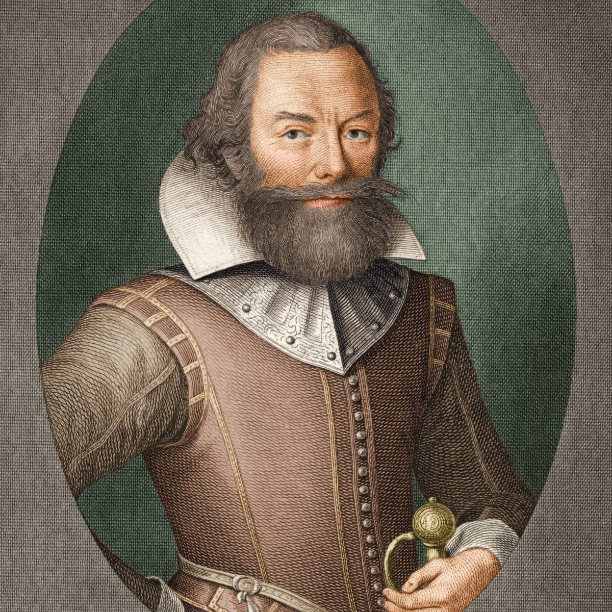
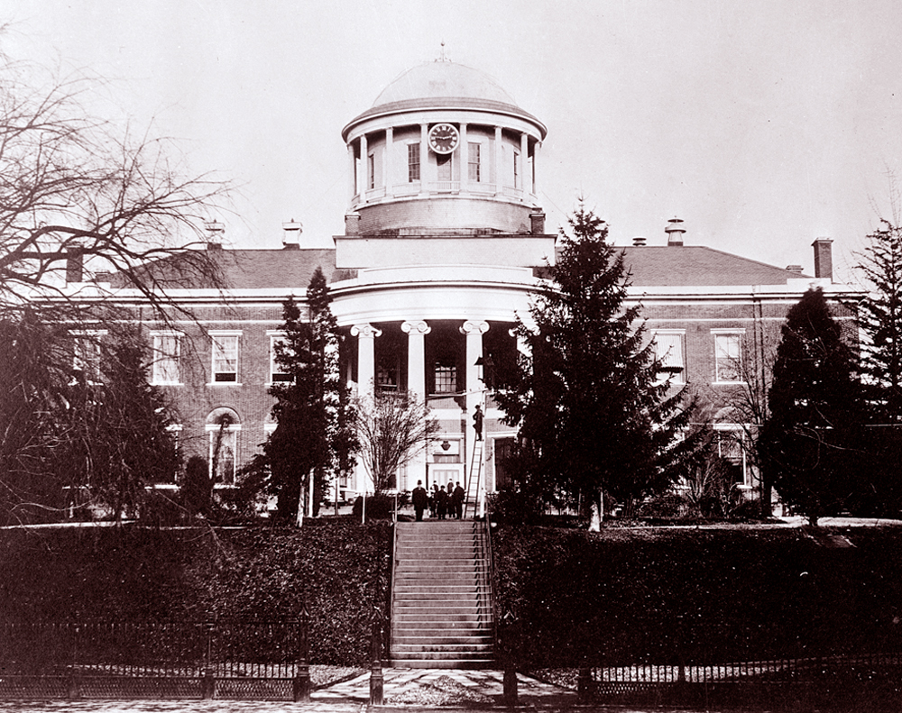

Our History.
The history of Harrisburg, the state capital of the Commonwealth of Pennsylvania, United States, has played a key role in the development of the nation's industrial history from its origins as a trading outpost to the present. Harrisburg has played a critical role in American history during the Westward Migration, the American Civil War, and the Industrial Revolution. For part of the 19th century, the building of the Pennsylvania Canal and later the Pennsylvania Railroad allowed Harrisburg to become one of the most industrialized cities in the Northeast.
Harrisburg's site along the Susquehanna River is thought to have been inhabited by Native Americans as early as 3000 BC. Known to the Native Americans as "Peixtin", or "Paxtang", the area was an important resting place and crossroads for Native American traders, as the trails leading from the Delaware to the Ohio rivers, and from the Potomac to the Upper Susquehanna intersected there.
The first European contact with Native Americans in Pennsylvania was made by the Englishman, Captain John Smith, who journeyed from Virginia up the Susquehanna River in 1608 and visited with the Susquehanna tribe. In 1719, John Harris, Sr., an English trader, settled here and 14 years later secured grants of 800 acres (3.2 km2) in this vicinity. In 1785, John Harris, Jr. made plans to lay out a town on his father's land, which he named Harrisburg. In the spring of 1785, the town was formally surveyed by William Maclay, who was a son-in-law of John Harris, Sr.


In 1791, Harrisburg became incorporated, and in October 1812 it was named the Pennsylvania state capital, which it has remained ever since. The assembling here of the highly sectional Harrisburg Convention in 1827 (signaling what may have been the birth of lobbying on a national scale) led to the passage of the high protective-tariff bill of 1828.
In 1839, William Henry Harrison and John Tyler were nominated for president and vice president of the United States at the first national convention of the Whig Party of the United States, which was held in Harrisburg.